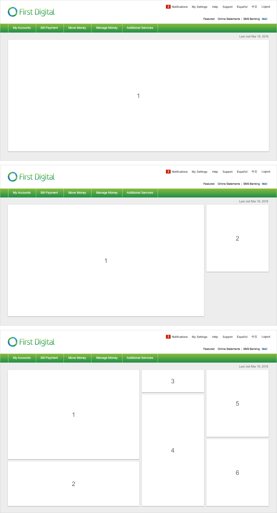
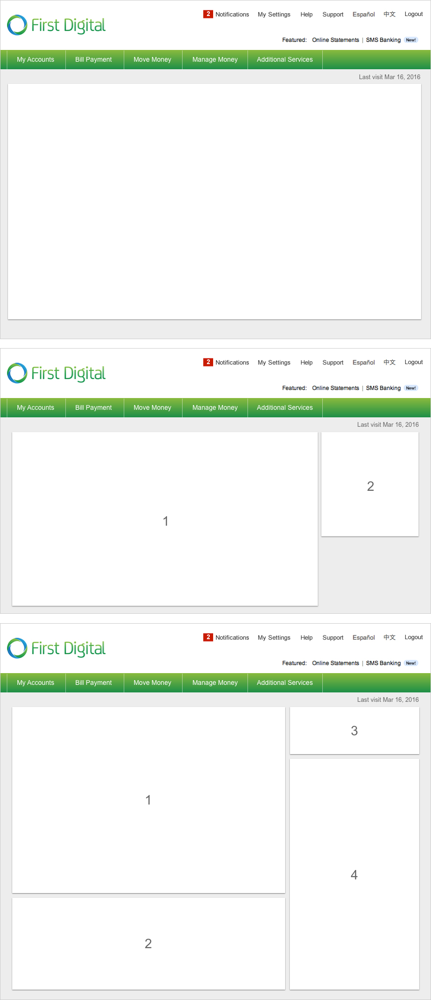
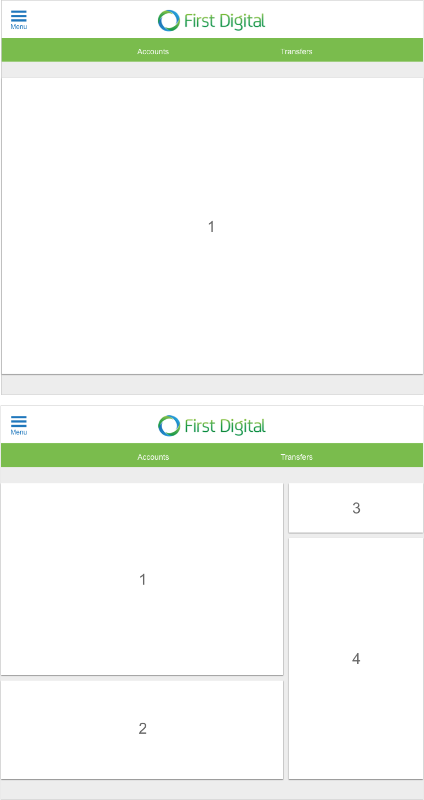
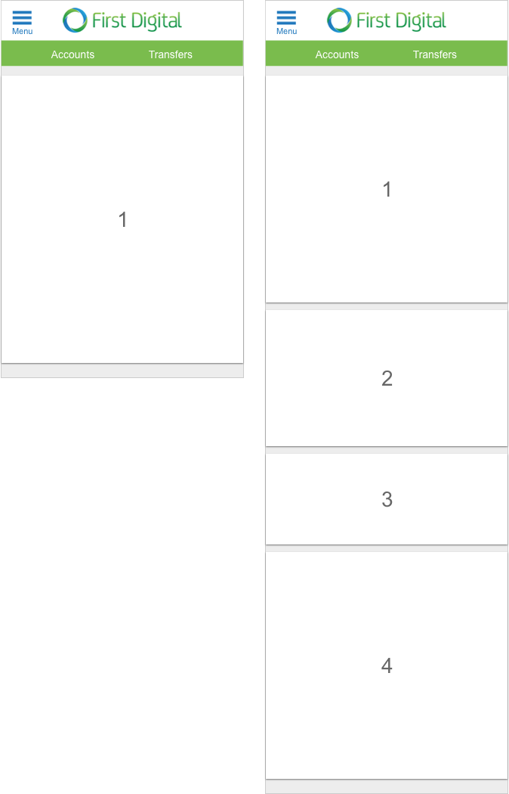

Structure
Desktop Structure (L)
There are three common layout types for the large screen size: 3-column, 2-column, and the 1-column layout.

Desktop Structure (M)
There are two common layout types for the medium screen size: 2-column and a 1-column layout. If there are three columns on L, you can either move the widgets from the third columns into the remaining columns, or simply hide those widgets.

Tablet Structure (S)
At the S screen size, there can be one or two columns. If there are two or three columns on L and M, you can either move some of the widgets from the other columns into the remaining columns, or hide those widgets.

Mobile Structure (XS)
There is only one column at the XS breakpoint. If there are two or three columns on larger screen sizes, you can either move some of the widgets from the other columns into the remaining columns, or hide those widgets.
